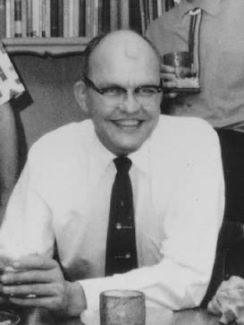
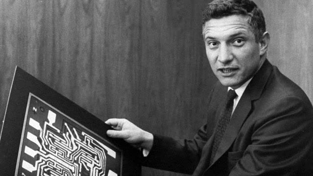
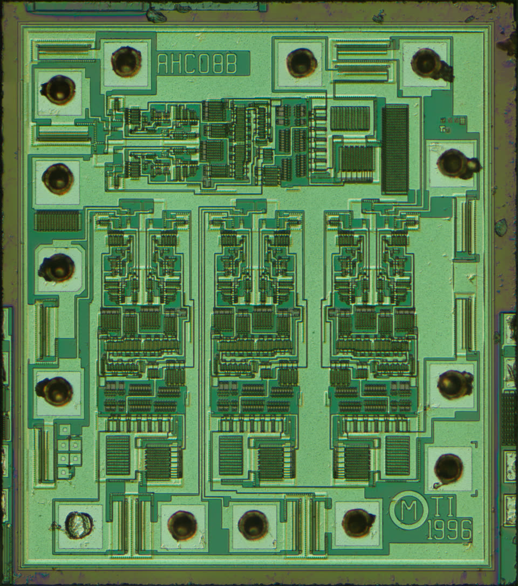
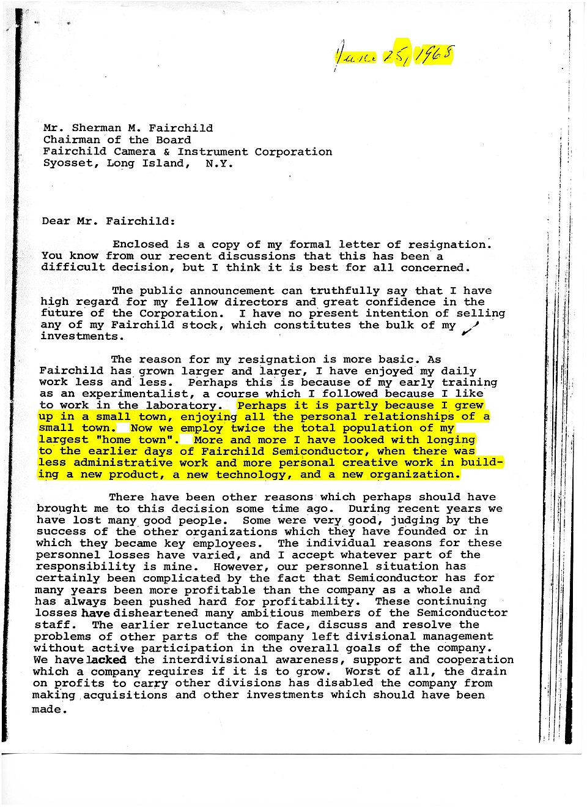

Quem fez o primeiro chip
A resposta honesta é dois, em duas empresas, com um ano de diferença. E no fim fica claro por que não dá pra escolher um. Quando o áudio pedir, aperte Próximo.
Como ouvir. São 10 telas. Quem está só no áudio acompanha normalmente; quem está com a página aberta vira a tela quando o áudio pedir.

A tirania dos números

Um projeto com dez mil transistores não pede dez mil soldas: cada peça tem várias pernas, então são dezenas de milhares de pontos, todos feitos por mão humana, um de cada vez.
O homem que ficou sozinho

O dia em que funcionou
O outro caminho

Imprimir em vez de soldar

A casquinha de vidro não servia só pra proteger: era um chão isolado em cima do circuito. E num chão isolado dá pra imprimir as ligações, trilhas finas de metal que descem por janelinhas até encostar no silício.
A briga na justiça
Quando uma ideia está madura, ela costuma aparecer em mais de um lugar quase ao mesmo tempo. A patente vira uma discussão sobre quem escreveu primeiro, não sobre quem pensou sozinho.
O que veio pra cada um
